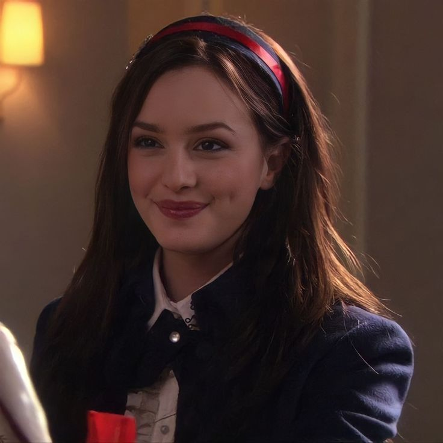
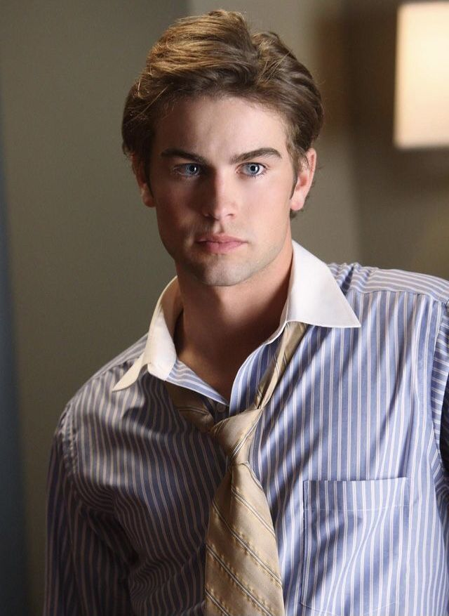
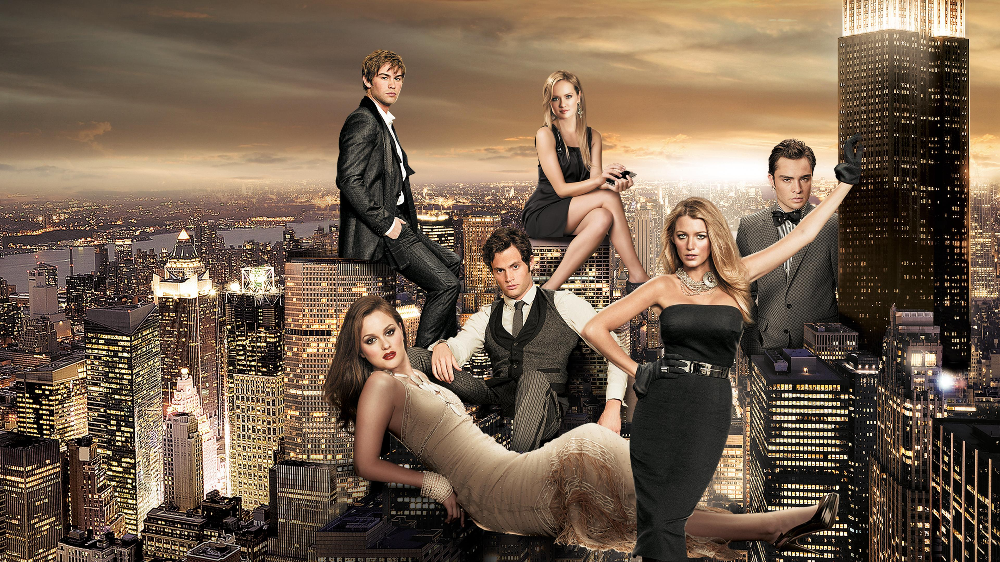
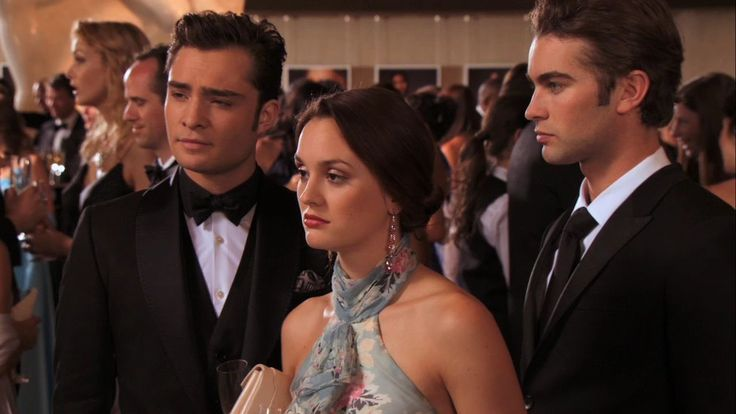
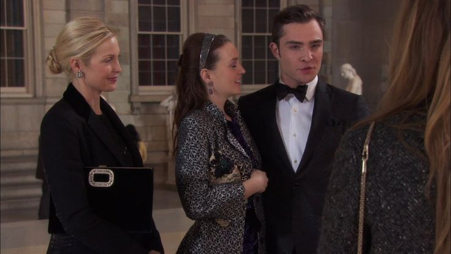
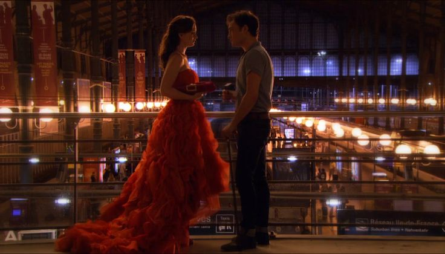
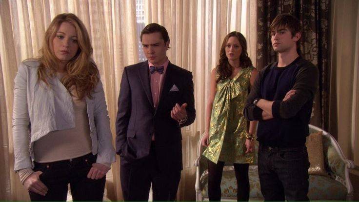
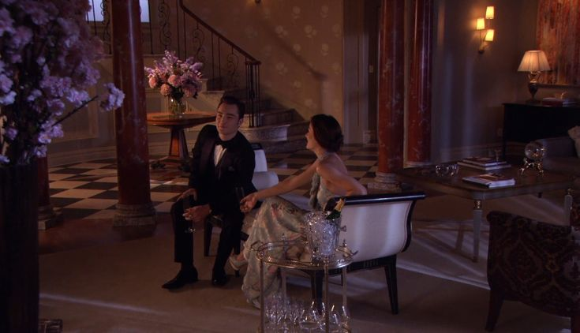

Gossip Girl es una serie de televisión estadounidense que trata sobre la vida de los adolescentes ricos y privilegiados que viven en el Upper East Side de Manhattan. La serie se centra en sus relaciones amorosas, familiares, económicas, y en los dramas que viven en su transición a la madurez.
La historia se narra a través de un blog anónimo, llamado "Gossip Girl", que revela secretos, rumores y chismes sobre los protagonistas.
Serena van der Woodsen es un personaje de la serie de novelas y la serie de televisión Gossip Girl. Se caracteriza por ser una adolescente popular y atractiva, con una belleza natural y un estilo de vida lujoso.
Blair Waldorf

Blair Waldorf es un personaje de la serie Gossip Girl que se caracteriza por ser una socialité de Nueva York con un estilo clásico y preppy. Es una chica inteligente, manipuladora y decidida que sabe lo que quiere.
Chuck Bass
Chuck Bass es un personaje de la serie de televisión Gossip Girl. Se le describe como un joven moreno de ojos marrones profundos con un sentido de la moda extravagante.
Nate Archibald

Nate Archibald es un personaje de la serie de libros Gossip Girl y de la serie de televisión del mismo nombre. También es el nombre de un exjugador y entrenador de baloncesto estadounidense.
Temporadas

Temporada 1
La primera temporada de la serie Gossip Girl cuenta la historia de Serena van der Woodsen,
quien regresa al Upper East Side de Manhattan después de una misteriosa desaparición.
La serie está narrada por la bloguera anónima Gossip Girl, quien espía a los jóvenes ricos de la zona.

Temporada 2
La segunda temporada de Gossip Girl nos sumerge aún más en el drama y los secretos
del Upper East Side. Tras los eventos de la primera temporada, las vidas de los adolescentes
más privilegiados de Manhattan continúan dando giros inesperados.

Temporada 3
La tercera temporada marca un punto de inflexión en la serie, ya que nuestros
personajes favoritos abandonan el instituto y se adentran en el mundo universitario.
Este cambio de escenario trae consigo nuevos desafíos, romances y, por supuesto, más drama.

Temporada 4
Esta temporada nos lleva a un viaje lleno de intrigas, nuevos personajes y grandes
revelaciones. Con nuestros protagonistas ya en la universidad, la vida en el Upper
East Side se vuelve aún más compleja.

Temporada 5
La quinta temporada de Gossip Girl nos lleva a un punto de inflexión en las vidas
de nuestros personajes favoritos. Serena se aventura en Hollywood, dejando atrás el Upper East Side
para perseguir sus sueños en la industria del cine.

Temporada 6
La sexta y última temporada de Gossip Girl nos lleva a un desenlace lleno de sorpresas.
La desaparición de Serena sacude al Upper East Side, mientras sus amigos se esfuerzan por encontrarla.
Finalmente, se revela la identidad de Gossip Girl, poniendo fin a años de misterio.
Reseñas
Es una de las mejores series que he visto,
te sumerge en el mundo de la elite de Manhattan, en donde los personajes principales son expuestos constantemente
por el sitio web de chica indiscreta.
Y aunque la serie va dirigida a un público adolescente, no se puede negar que también cautivó a las
personas que están fuera de ese grupo. Por ese mismo hecho y todo el impacto e influencia que generó la serie,
en cuanto al mundo de la moda, de las tendencias, etc... Convierte a la serie en un icono y en un clásico,
no sólo por mostrarnos ese glamuroso mundo de la elite, sino también por la variedad de temas tratados en
cada capítulo, como las dinámicas de poder entre los personajes, la manipulación, el acoso, el amor, la
perseverancia, etc... Cada capítulo trae una buena historia, un buen drama y una buena reflexión.
-mitsuki kobayashi